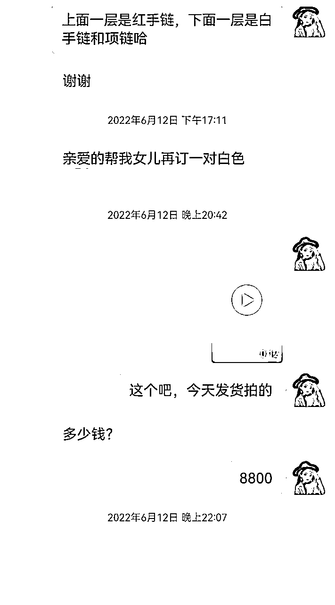
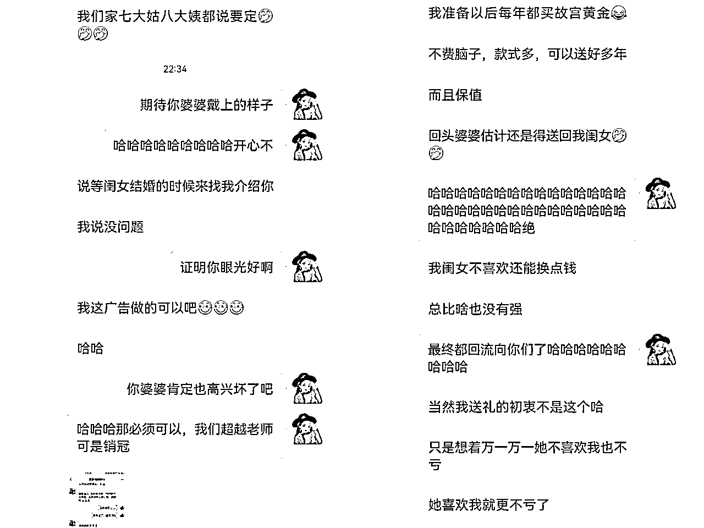
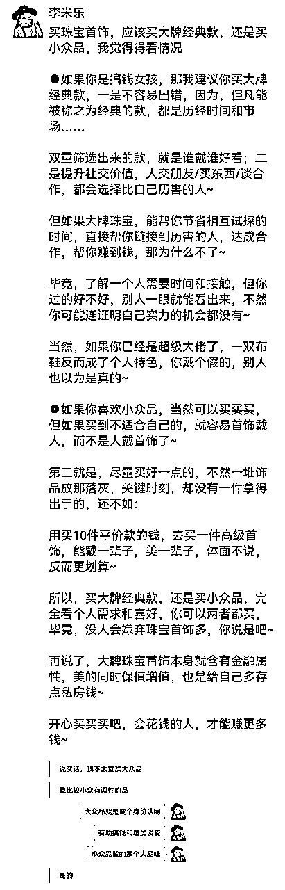
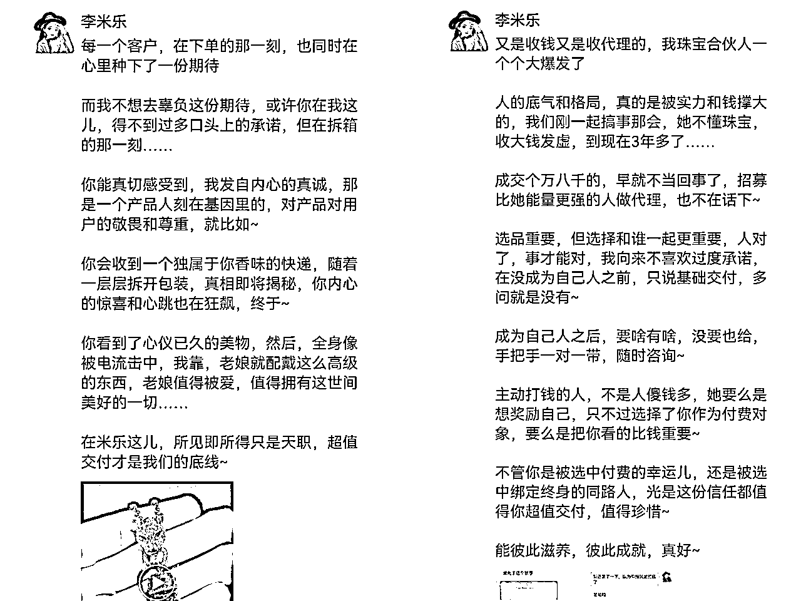
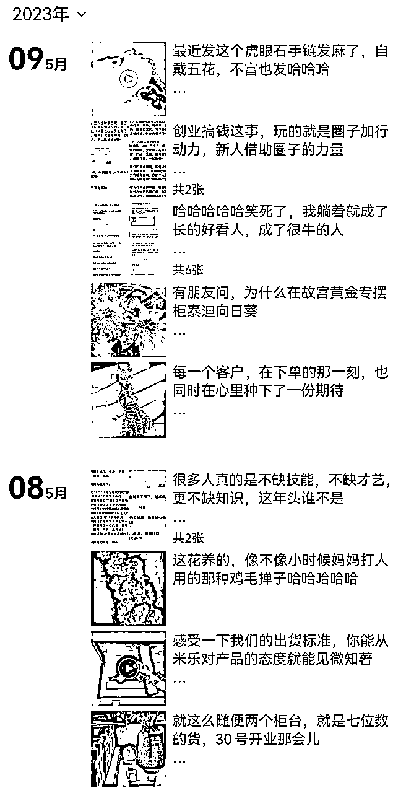
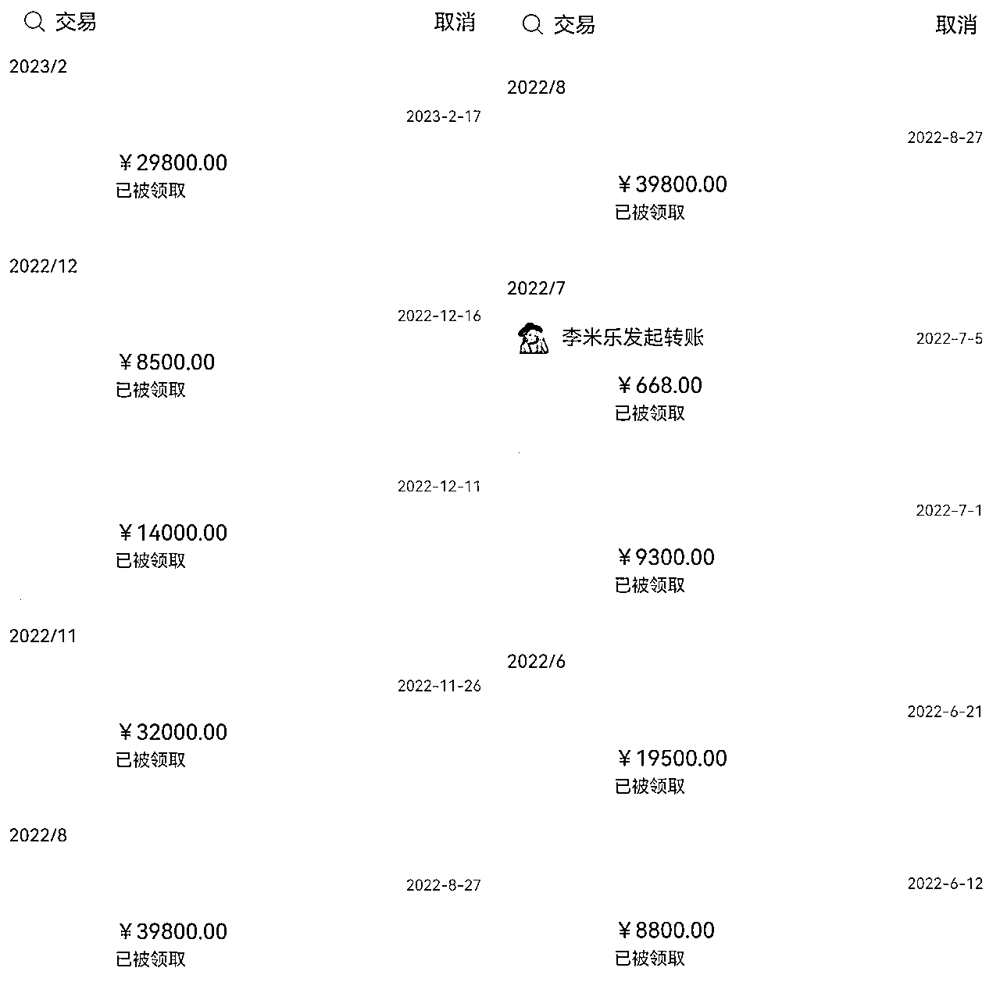
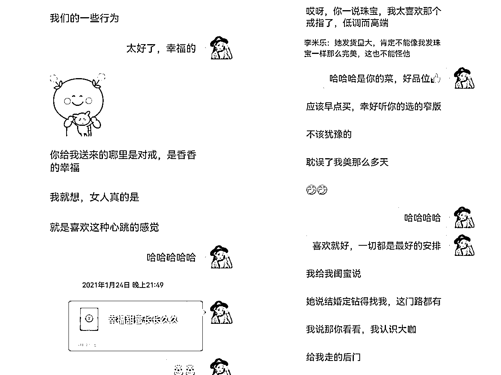
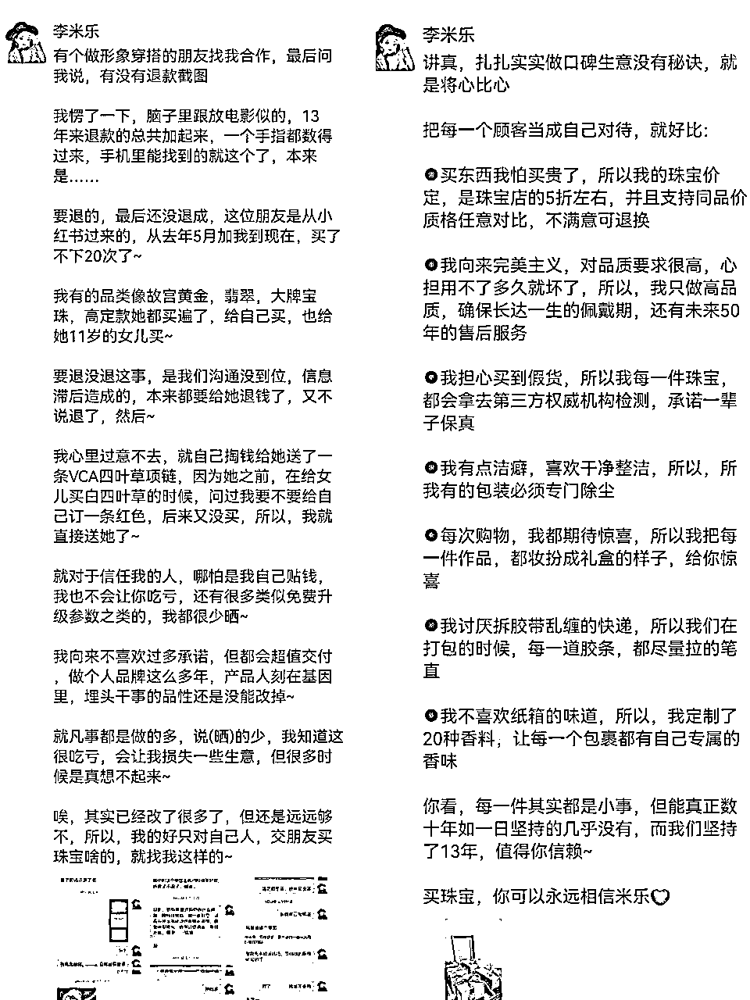

来源：https://n28vbku1px.feishu.cn/docx/MC1wdwhf6oVyU9x1MVHc9kuanuf
大家好，见贴欢喜，我是李米乐，扎根珠宝领域13年，副业个人IP孵化服务，从小红书引流到微信变现，算是跑通了一套带货，招募代理合伙人的闭环，去年4月底开始做小红书，前期100+粉丝就开始变现了，300+粉丝的时候变现有20w+，截止目前累积变现应该至少有50w+了，曾单日涨粉1000+
先说说之前我为什么没做公域引流的原因，一是我的老客户复购和转介绍相对比较高，路径依赖了，二是珠宝这个赛道，布局小红书的多，但真正跑出来的没几个。要么内容上只呈现产品，数据不行，要么是粉丝数上去了，但是加过来的没法转化，一听价格都说预算不够。那后来我又是因为什么开始做小红书，并实现高变现的了？
本文复盘了一个珠宝IP，从小红书引流到微信变现，到如何打造朋友圈的全套方法论，以及新人做帐号的几个小tips。
一，高客单产品流量从哪来
小红书是高净值用户的流量洼地，放着这么肥沃的鱼塘不去捞，着实让人心痒难安，再说多数人跑不出来，不代表我也跑不出来，首先，我在资源，地域方面有优势，坐标深圳，全国70%以上的珠宝都出自深圳，13年自有/合作30+工厂，拥有一条完整的珠宝产业链，产品品类齐全：钻石，彩宝，翡翠，珍珠，黄金/故宫黄金；
奢侈品大牌珠宝像梵克雅宝，卡地亚，宝格丽等也有渠道资源，已帮客户代买9年了，低成本带来的低价格，是我们的优势，图片视频素材都是现成的。
2，产品经过时间和市场的双重检验，基本上从米乐这里买过的用户都成了老客户，有的当天收到货，立马来复购，有的会自发的转介绍，有的成了代理，积累了初始流量，所以，无论是产品品质，还是产品性价比，都能打，

3，筛选有付费能力的精准用户
知名未来学家凯文凯利在畅销书《失控》中，提到过著名的1000个铁杆粉丝理论，高客单行业很多都是20%的用户群体，贡献了80%的销售额，而在奢侈品行业，6%的高定用户，帮助品牌完成了超过60%的销售额。
所以，对于只做中高端珠宝的我来讲，只需要从小红书筛选出1000位忠实的付费用户，与我产生直接关系，并且提高复购率，和转介绍就可以了，就不需要太多流量。
我在刷同行帐号的时候，发现很多数据不好的珠宝帐号，要么是单纯的发布产品视频，没有任何文案，要么是内容粗糙，只讲专业性干货，缺少人设，质感和场景等，那么我只要做好我的帐号IP定位，输出差异化内容，大概率就能跑出来。
三，人格化IP定位
1、找对标帐号，在看了很多珠宝帐号，和时尚类帐号后，我清晰了自己要做一个什么样的帐号，刷帐号的同时，顺便建立了素材库，把爆款标题，选题，标签，引流勾子等，都放进了自己的素材库，也拆解了一些珠宝帐号，和时尚类爆款文案，整理了关键词，长尾词，和引导词词库，以方便我在做内容的时候，随时取用。
2，利用专业，我扎根珠宝领域13年，用这个资历分享专业，和做产品推荐是有一定可信度的，也擅长和熟悉珠宝专业知识，避坑，行业内幕，穿搭方面的东西；
3，利用人品红利，做高客单，为人要靠谱，让用户信任依赖你，而做朋友圈生意，如果产品不好，或者为人不行，很快就玩完了，我们做了13年，时间本身就可以证明一些东西，而且好产品本身会说话，买过的都成了老客户，有的成了代理。
所以，我的人设就是专业，靠谱，帮你用低于市场价50%的价格，买到高于市场品质的好珠宝，花小钱，办大事，并敲定了视频结尾要用的slogan，以及帐号昵称、头像、背景、简介4件套等。
三，内容策划
1，变现路径；我做小红书的目的很明确，就是通过小红书引流到微信变现，起号前想清楚变现路径，你才能知道要做什么内容，吸引什么样的受众群体，这点非常重要，大把几十，上百万粉丝的帐号不变现。
2，内容定位；确定自己的受群体后，根据用户画像产出内容，就比如，我的一个小红书珠宝帐号，内容非常垂直，只输出两类内容：一是专业知识，占领用户心智；二是款式推荐，销售用户。
具体选题我会通过关键词，在小红书搜索最热笔记或者视频，也会在抖音搜索高赞爆款，再有就是利用灰豚搜索爆款，确定选题后，写文案，然后用手机剪映导入现成的视频素材，完成录音和剪辑。
当时10几个粉丝的时候就有人咨询，100+粉丝就开始变现了，300+粉丝的时候变现有20w+，用户一来咨询几句就下单，付款非常爽快，复购率也高（这一点还涉及到朋友圈打造，后面分享）

再看我另一个珠宝人设号的内容定位：
1），站在珠宝人角度讲热点，跟珠宝相关的时尚热点都跟，比如明星名人，影视剧，戴了什么珠宝首饰，拆解穿搭，做流量；
2），站在珠宝人角度看珠宝，讲专业知识，讲行业内幕，销售用户，
3），站在珠宝人角度谈认知，讲女性成长，讲珠宝背后的故事，不挑剔用户
对这个人设号，我当初的设想是先把粉丝量怼起来，后面再考虑要不要做专，出了几个1000+到5000+的爆款，涨粉确实很快，但引流来的人购买力不行，大多是咨询完后说预算不够，当时被虚假的粉丝量迷惑了眼，想做大号，体验过后才知道，如今引流来的不精准粉丝，都是当初脑子里进的水。
所以，想清楚自己要什么非常重要，对于咱们自媒体人来讲，我们的终极目的就是变现，两三百个精准粉，抵得过几十万非精准粉丝。
3，呈现形式
不管你是做图文笔记还是视频，围绕你的人设定位，提供什么内容，价值，干货，确定横/竖屏，是否真人出镜，封面，视觉锤，听觉锤等，都需要符合帐号的调性，就比如我300+粉，变现20w+的珠宝帐号，封面很简单。
就是将6张产品图，比如钻戒，就找6张风格一致的图片，大牌珠宝首饰就选同类产品，用美图秀秀模版拼在一起，上面加了个黑色背景，调成透明色，再加上小标题完事，用尽可能多的款式图抓取用户眼球；
反观我的小红书珠宝人设号，封面，基本上用的都是明星图，设计也相对比较高级，但吸引来的都是一些喜欢娱乐八卦的，没有什么购买力的粉。
所以，不需要有多高的做图功底，和剪辑水平，呈现形式也不一定要多高级，符合你的帐号调性，能吸引到精准粉丝，好变现就OK，管它黑猫白猫，能抓到老鼠就是好猫，大胆干起来就对了。
4、关于文案
我采用开头丢出一个问题，接着说我13年资历的身份，告诉用户我有资格帮你解决这个问题，或推荐什么款式，中间部分讲价值干货，穿插小故事，或讲款式的买点。
比如10款好看不贵的手镯，中间部分就是讲不同品牌，不同款式的手镯的买点，给用户一个选择的理由，结尾部分引导加群聊+评论区互动，报slogan，下指令：点赞+关注
5，引流方式
引流主要通过群聊，用户加入群聊后，小号在群里发文字消息和微信号，引导加微信；还有一个就是新发布的视频，我会丢在群里，进行第一波冷启动；
私聊的用户我会让她移步主页加群聊，评论区咨询的用户会直接@小号，引导加微信。之前还用小号搜私信用户的小红书号，用小号回复加微信，但效果不太好，还是建议通过群聊的方式，或评论区@小号加微信。
四，朋友圈打造
引流到微信后，需要通过朋友圈承接流量，培育信任，变现，朋友圈可以说是我们的的根据地，朋友圈发什么，怎么发，视觉效果如何，决定了粉丝的留存率，这就跟你第一次见到一个人，ta给你的第一印象，决定了你是否会跟ta深度交往一样，所以朋友圈一定要好好发。
依你这个“人”为圆心，你就是你朋友圈里的明星，全方位的晒跟“你”有关的一切，持续的输出价值，就比如，我哪怕是写产品文案，也会带上价值，要么是通过生活工作场景融入产品，用户就比较容易接受，不会太反感，朋友圈打造可以分为两大类去发：
1，卖自己，可以分生活圈和思维圈，生活圈：用来展示你的工作生活，让用户感知到你是个活生生立体的人，对你产生好感（始于颜值）；
思维圈，表达你对某个事件的价值观，你的看法（忠于才华），通过生活圈+思维圈，让用深度了解你是一个怎样的人（陷于人品），从而想要认识你，靠近你，成为你

2，卖产品，可以分为产品圈和代理圈，产品圈可以写产品故事，卖点，行业动态内幕，以及和客户的故事等，要注意的一点是，在写产品卖点的时候，尽可能把卖点转换成为买点，帮用户去“买”，而不是去“卖”；
代理圈，代理圈可以写团队，老大，成员，包括团队文化，事件，老大这个人的思维格局，团队成员的成长故事等等，内容比较多，我以前带学员的时候，有做过一份思维导图，有需要的圈友可以找我拿。

3，朋友圈调性，全方位的晒自己，不是什么都发，而是要有选择的晒，发圈的整体内容/风格，一定要符合你个人IP的调性。
就好比我做珠宝，我朋友圈就相对比较高大上一些，我在日常拍照的时候，会选择相对比较整洁高级的一面去拍，如果我晒的照片，呈现出的生活很没格调，用户会觉得你的审美都是这样，又怎么可能相信我推荐的产品，更别提买了。
同样，如果你是做低客单产品，朋友圈就要接地气一些，你搞的高大上，发一些高深用户听不懂的内容，用户反而不敢靠近你。

五，提升复购率和转介绍
打造好朋友圈，持续输出有价值的内容，承接住流量后，用户付款会非常爽快，只要产品好，客户复购率和转介绍都会很高。

同时也会吸引一些珠宝同行，和非同行有优质女性用户群体，和对珠宝行业感兴趣的团队/个人来合作，嫁接珠宝作为第二第三收入曲线，这部分人可以招募/培养成为代理合伙人，合伙人模式，一方面可以复制自己跑通的模式，跟自己人一起搞钱，代理合伙人再招募代理，形成裂变，另一方面，也是培养自己的忠实客户。
还有的不做珠宝，但是身边有人有需求的话，也会直接推荐给我，成交后我会发50%的CPS给对方，相当于交换流量，这种合作方式就非常省心，也因为转嫁了对方的信任，成交起来也容易。
再就是线上卖高客单产品，用户不像在专柜一样，看得见摸得着，所以除了高清实拍图片视频素材，以及优质文案，适度的售中服务，和终身售后外，我们还特意定制了20种不同味道的香料。
在包装的时候，必须先戴上手套，用吸尘器吸干净盒子里的毛毛，再一层层包装，贴贴纸，最后放入定制的香料，尽可能美观的打上胶条。
每一个包裹都要耗时15分钟，历经12道工序才能完成，让每一个包裹都有独属于自己的香味，让每一位用户从收到货的那一刻开始，就体验到拆礼物的惊喜和心跳的感觉，以此来提升用户体验感，增加用户粘性。
当你把每一个细节做到极致，用户能从诸多细节中感知到你对产品，对她本人的敬畏之心和尊重，用户也会也用复购，和转介绍来回馈你，自发的成为你移动的广告体。

六，高客单客户运营
打铁还需自身硬，客户运营是锦上添花的事，最终还得是产品好，性价比高，比如，我们平时都是用，原本只是用来查看钻石的，14倍放大镜来做质检，来把控品质，这在整个珠宝圈都少见；
也不追潮流，因为追求潮流，好看的永远是下一款，只做高品质珠宝；另位就是在细节方面提升用户体验感（详见如上五），再加上我都是终身售后，所以客户不管是自己购买，还是推荐朋友来买，都没有后顾之忧；没有做过多运营的动作，具体如下：
第1，我会在平时销售过程中，留意客户无意中透露的消息，比如，我这位客户，曾说想买某款红色项链，但最终自己只买了手链，和给女儿买了一套；
后来在一次复购过程中，因为沟通没及时，信息滞后，导致客户体验感不好想退货又没退，我就自己贴钱直接送她了，对于自己人，尤其是老客户/合伙人，别计较一时盈亏，或者是计算投入产出比，大方给，学会分钱，才能赚更多钱

第2，不再节假日跟风发问候打扰客户，会在一些特殊时间，比如生日，或在平时给客户制造惊喜，比如寄一些当地买不到的时令水果，或送便携式首饰包等礼物。
第3，不做打折促销活动，老客户有老朋友友情价，新客户有一次历史最低体验价福利，平时以及节假日不做促销活动，以免让老客户心生自己是不是买贵了的疑惑，但偶尔会推出一些特价款，给一些新朋友体验的机会；
七，如何避坑规避风险
做珠宝这些年，有很多人跟我吐槽过关于购买珠宝，以及和珠宝商合作的各种不如意，轻则损失金钱，重则引起纠纷，总归都是劳民伤财烦心的事，这里我列举一些市面上常见的坑，希望能帮助有购买需求，和需要选货源找合作伙伴的圈友们，少踩坑规避风险：
1，钻戒的坑：1）很多商家吹嘘自己的钻石是8星8箭，以这样的噱头来卖高价，但其实参数好的钻石都是8星8箭，遇到可直接忽略
如何规避：认准GIA证书（钻石腰棱处会有一串镭射编码，一码一石，相当于我们的身份证号），选择参数好（比如VS2,SI1,SI2净度参数最容易入坑，SI2以下不推荐）火彩OK的，品质好的钻石每一颗都是8星8箭，商家也不会刻意提起，因为是日常
要么找靠谱的渠道，要么去正规的店，以防买到套证钻（培育钻套GIA证书）；另外需要注意的是，珠宝专柜的灯光是请专人，花重金设计过的，在专业灯光的照射下，业内人有时都容易看走眼，这也是很多人疑惑，为什么在专柜看上去很漂亮，但在自然光线下就没那么好看的原因了。
2）追求便宜要适度：羊毛出在羊身上的道理大家都懂，过度追求便宜，天然钻石就有可能变成人造莫桑钻，懂行的人都知道，钻石是天然的产物，全球所有品牌跟我们一样，都在同一个系统里选购钻石（被戴比尔斯垄断）， 然后，被制作成不同的款式。你去典当行，品牌钻戒并不会比私人定制的钻戒多当一些钱，看的还是钻石本身的价值。
过度追求便宜，也容易买到偷工减料，缺斤少两（看上去轻飘飘的没质感），参数不好的钻戒（后期想出手时也不好出手），把原本5克的戒托，变成只有3克，或在局部参杂其它材质等风险
如何规避：选择参数好的钻石，质感好的钻戒，若追求便宜，建议找靠谱厂家定制，可省去品牌溢价的钱。很多人说自己的钻戒不保值是智商税，但其实你只要看钻石行情，就知道钻石一直在涨，所以并非钻戒不保值，而是你买的钻戒不保值
原因就是，要么是你选的参数不好，要么是你选的大品牌，多付了品牌溢价的钱，缩减了钻石的增值空间，这就跟你炒股是抄底价入，还是买在高位一个道理。
3）选正经款式：很多珠宝同行，包括你在一些品牌店都会看到，一些金属车花片的款（通过技术手段，让小钻石一眼看上去显大），这种款一度还蛮受市场欢迎的，不少同行也因此赚到钱了，但为什么我不做这种？
这些乱七八糟，欺骗顾客的行为，短期或许能赚点快钱，但长远来看，损人不利己，因为钻戒要戴十几年（有的中途会换大的或改款）甚至一辈子的，这种东西也就一时看着新鲜冲动之下买了，或一时虚荣心作崇买了，但看久了容易厌，通过技术手段显大的钻戒，自己戴着也会心虚，担心被别人说
如何规避：谨慎选择，建议选经典款式，想钻石显大可以选择围镶设计等，好看高级还耐看，戴出去也不怕丢面子。
2，黄金类：1）追求便宜要适度，像一些公域平台直播间，商场活动打折款等，听上去好像很便宜很划算，但你只要留心就会发现，主播只强调价格便宜，却不提（不标）克重是多少，过度的便宜大都是偷工减料，克重远达不到标准要求，我有的客户会跟我吐槽说，自己戴不住项链，戴着戴着就不见了，但其实是金重不达标，太细就容易断裂，什么时候掉了都不知道
如何规避：抛开金重谈价格都是耍流氓，商家终端零售/铺货/扣点等都是成本，他们也要活下去的，过度追求便宜就容易踩坑，聪明的选择是找渠道购买，相当于省去了中间流通环节，以及终端销售成本了；珠宝黄金不是消费品，它本身含有金融属性，只不过是换种方式，陪伴在你身边了，所以，要么不买，要么就买件像样的
任何一个行业都有坑，珠宝行业的坑也远不止这些，但只要你在挑选前，多做一些功课，不过度追求便宜，理性购买，就不会那么轻易入坑；有合作需求的伙伴，建议多观察合作对象，货源好只是基础，更重要的人，人可以把一个好项目做死，人也可以力挽狂澜扭转一个项目的颓势，人对了，事才能对~
感谢你看到这里，截止目前我做阵亡过两个号，走过不少弯路，所以，最后再聊几点做号的心态和认知，希望看到这里的圈友能少走一些变路：
1，降低期待
因为很多人包括我自己，当时看到别人发第一就爆了，有的随便发一条就几千上万赞，看到别人又加人加麻了，又变现了几个几十个w，就焦虑了，就着急了，就总想找到爆款密码，找到流量密码。
但事实上，这大概率是幸存者偏差，极有可能是别人踩准了某个热点，抓住了某个时机，或者连她本人都不知道为什么会爆，这里面有很大的不确定性和偶然性，你就算照抄也不一定会爆，再一个就是，积累，你只看到人家发一篇就爆了，你看不到的是别人背后长时间的积累。
所以，降低期待，踏踏实实的做内容，用好内容去打动用户，是我们普通人在不确定性的公域平台，拿抓到的唯一确定性。
2，持续做赚钱的事
通过我的案例，想必你也看出来了，我做第一个号成功变现后，并没有持续做赚钱的事，而是舍近求远跑去尝试新的方式去了，总觉得还有更历害的方法，但很多人不管是个体发展，还是做帐号，在发展到一定阶段，或在某个节点遇到瓶颈后，就会去寻求突破，想要突破没错，但切记不要偏离原本赚钱的轨迹去舍本逐利，人最难的不是在对和错之间做选择，而是在对和更对之间做选择。
就比如我第一个珠宝帐号，100+粉就开始变现了，我没有在这条路上持续深挖，反而在遇到瓶颈后，换了另一条看似阳关大道，实则是虚假繁荣的死路；也有很多伙伴找我聊，说要做矩阵，要同时做两个赛道等等。
一个人的时间精力有限，如果没有人帮你的话，你很难一个人同时兼顾做多个帐号，在你已经跑通的小闭环内去深挖放大，持续做赚钱的事，坚持稳定的输出好内容，让用户觉得你的每一条内容都有价值，你的下一条内容也会给他类似的价值，你给到用户确定性，用户也会对你不离不弃。
3，找到自己的节奏
我之前一直路径依赖，基本上靠一帮老客户复购和转介绍，一直待在自己的舒适圈，当我先后加入玩赚，加入生财后，看到大家都是多渠道收入，有的一个人居然有10多个身份，有主业有副业，有c端收入，有b端固定收入，一个比一个历害，加上两个圈子海量的信息铺面而来，就把自己整焦虑了。
还有的小伙伴精力不聚焦，今天看到这个风口呼啦啦去了，明天看到那个赚钱，那个方法好又呼啦啦去了，后天一个莫须有的合作，一聊聊几个小时，东看看西看看，东搞搞西搞搞，把自己搞的好像很忙，但是又不知道在忙什么。
一定要找到自己的节奏，设定自己的行事边界，明白自己那些事能做，哪些事做不过来，做不过来的事就不要去碰，这样就不会焦虑 ，也不会因为半途而废而内耗，
只把时间和注意力放在自己身上，只专注在自己的时区努力，做有意义的事情，见想见的人，吃有营养的东西，听有营养的声音，有定力，有边界，看重自己内在的秩序，在因上努力，在果上随缘，当你自己足够强大，外界的一切就都没办法影响到你。
我是李米乐，一起生财啊~